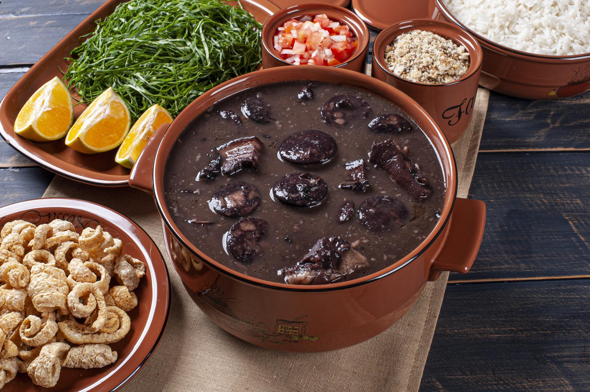

Feijoada
Home

Description:
A classic of Brazilian cuisine!
Ingredients:
- 1 Kg of black beans
- 70 G pig ear
- 70 G of pig's foot
- 50 G pork loin
- 150 G of Portuguese sausage
- 100 G of dried meat
- 70 G pigtail
- 100 G pork ribs
- 100 G paio
Spice:
- 2 large chopped onions
- 3 bay leaves
- Pepper of the kingdom to taste
- 40 Ml of pinga (brazilian alcoholic beverage)
- 1 Pack of chopped green chives
- 6 cloves of garlic
- 1 Or 2 oranges
- Sal if you need it
Steps:
- Soak the meats for 36 hours or more, change the water several times, if it is hot or summer, put ice on top or in cold layers.
- Put to cook step by step: the hard meats, then the soft meats.
- When it is soft put the beans, and remove the meats.
- Finally season the beans.
- Accompaniments
Kale, white rice, orange, bistecs, farofa, pumpkin quibebe, bayon of two, bacon, turmeric and paio.
Other recipes:
- Pizza
- Strogonoff